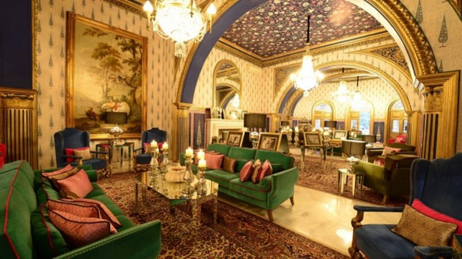

JAIPUR
Jaipur is the capital of India’s Rajasthan state.
It evokes the royal family that once ruled the region and that, in 1727, founded what is now called the Old City, or
“Pink City” for its trademark building color. At the center of its stately street grid (notable in India) stands the opulent, colonnaded City Palace complex.
Best Places to visit:-
1. Hawa Mahal:-
Hawa Mahal is a palace in Jaipur, India.It has 953 windows called as ‘Jharokhas’.
Built from red and pink sandstone, the palace sits on the edge of the City Palace, Jaipur, and extends to the Zenana, or women's chambers.
2. City Palace:-
The City Palace, Jaipur was established at the same time as the city of Jaipur,
by Maharaja Sawai Jai Singh II, who moved his court to Jaipur from Amber, in 1727. Jaipur is the present-day capital of the state of Rajasthan,
and until 1949 the City Palace was the ceremonial and administrative seat of the Maharaja of Jaipur.

3. Johari Bazaar:-
A shopper’s paradise and a must visit, Johari Bazaar in Jaipur has a reputation that precedes itself.
Located near Hawa Mahal, this market of exquisite jewellery and artefacts to choose from, can immerse shoppers in its glittering glory.
It is considered to be one of the oldest markets of Jaipur City.
4. Birla Mandir:-
Birla Mandir, Jaipur is a Hindu temple located in Jaipur, India and is one of many Birla mandirs. It was built by the B.M. Birla Foundation in 1988 and is constructed solely of white marble.
It is dedicated to the Hindu Goddess Lakshmi and Lord Vishnu, along with other Hindu gods and goddesses and selections from the Gita and Upanishads.
Must try Dishes:-
1. Gol Gappa:-
To begin with,Gol Gappa makes the very famous and delicious street food that has been attracting the tourists in Jaipur.
The tasty and mouth watering taste of this small gappa will make you their fan with no instant of time.
2. Ghevar:-
Ghevar is one the most popular sweet dish in Jaipur. It is specially made on the traditional festival Teej.
The Teej festival is incomplete without Ghevar. Flour, Sugar, Ghee and Milk are the main ingredients of Ghevar. It is round shaped sweet.
Preparation of Ghevar is similar to an art, and Ghevar makers are artist.

3. Pyaz Kachori:-
Pyaaz Kachori is the most eatable breakfast in Jaipur. It is spicy by its taste and served with chutney in Jaipur.
It is a kind of famous snack of Jaipur which you can find almost on every snack shops and street corners.
It is fried fluffy pastry filled with onions and potatoes mixture with spiciness. It is known as a local snack of Jaipur.
Must visit Restaurants:-
1. Rawat Mishthan Bhandar:-
If you want to explore the earthy flavors of Rajasthan early in the morning,
then this is the right place for you. The kachoris that are available in a multitude of styles and flavors would remind you of
school or college days; the other savories spell layers of bliss. The sweets melt in your mouth like butter, with their heavenly taste being registered on your taste buds forever. The ghewar, a disc-shaped desert that is made of flour and sugar syrup,
and the mirchi vadas served here need special mention as these really do entice the soul.
2. 1135AD:-
This award-winning restaurant is nestled inside the imperial Amer Palace.
Featuring an open-air courtyard that is canopied by the star-studded night sky, the restaurant serves an amalgamation of Mughlai,
Rajasthani and North Indian delights. The gold-enameled walls, plush chairs,
and the opulent tables can make any special occasion seem like a regal affair. A formal dining room and a private dining space decked up in silver and gold cater to the privacy of the who’s who of the city dining here.
 3. Cinnamon:-
The regal elegance of the Rajputs makes this gourmet theatre irresistibly resplendent.
The rich dishes that constitute the royal spread served here have been adapted from the princely states of India, of which Rajasthan is a gem.
Creating a whimsical aura in the minds of the diners are the signature offerings, especially the traditional Rajasthani thali. The décor of Cinnamon requires special mention. Composed in varying shades of pink,
mauve, purple, and magenta, the walls and ceiling reiterate the fact that pink is the new red. with best facilities , and a lot variety of food.